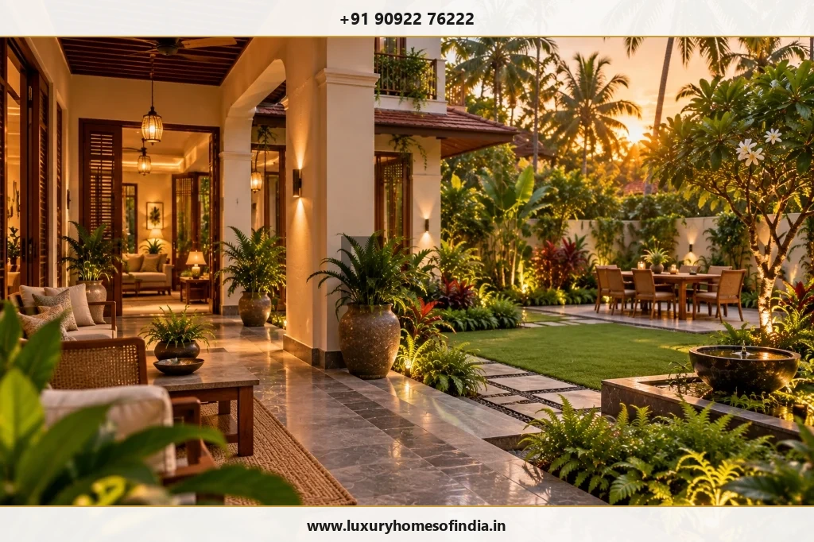
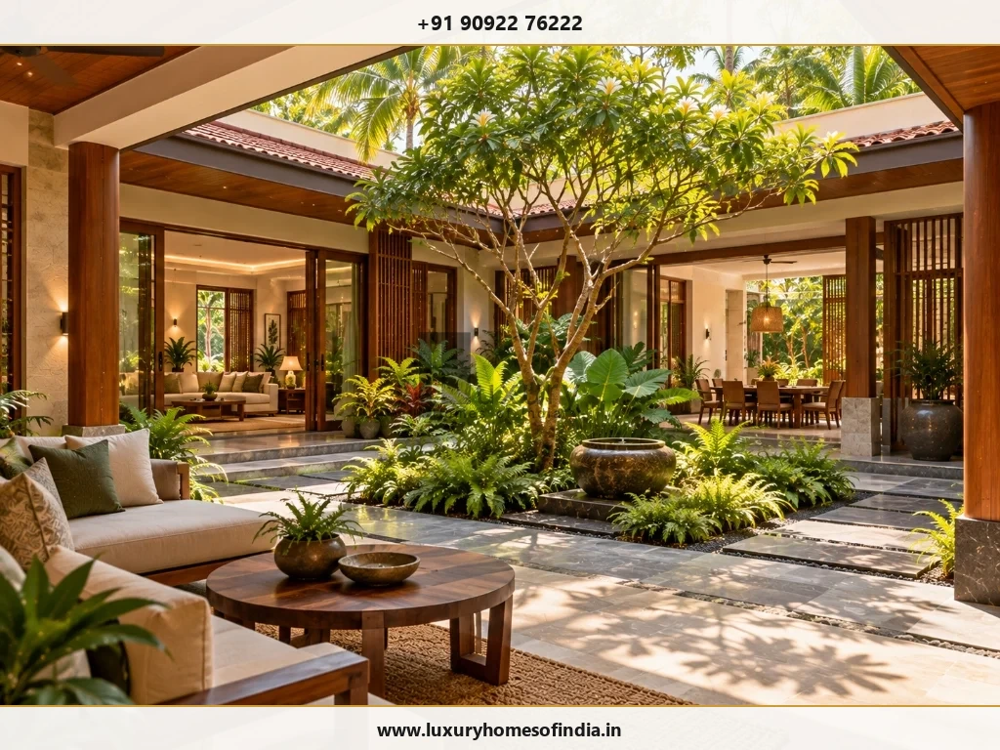
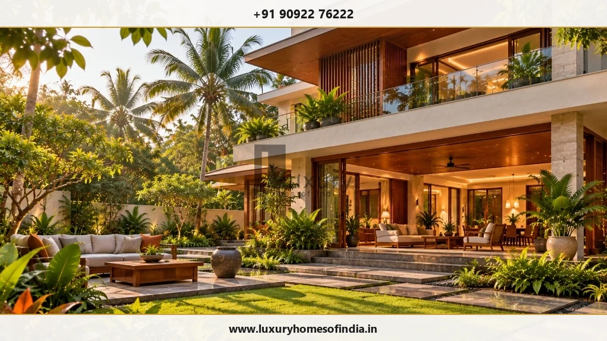
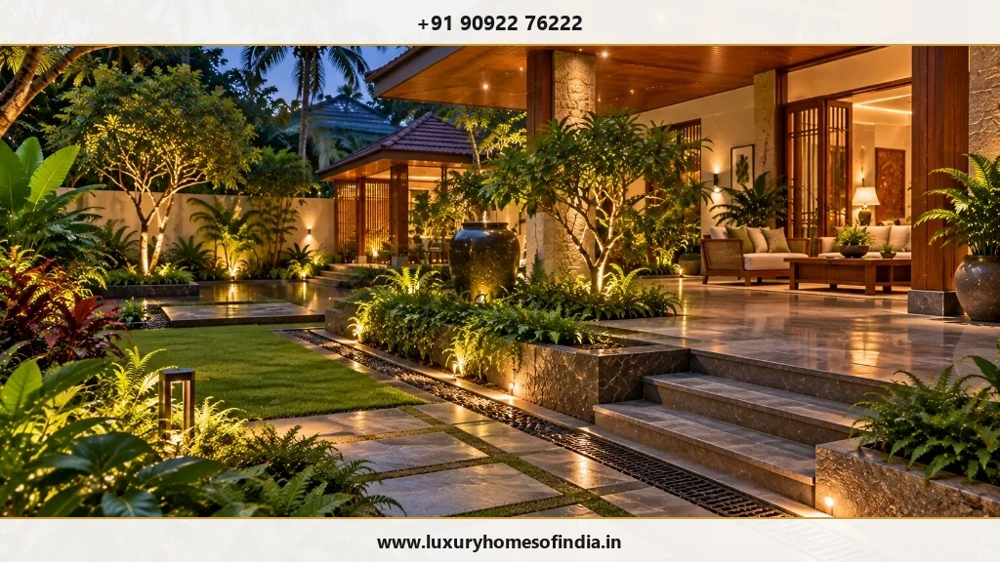
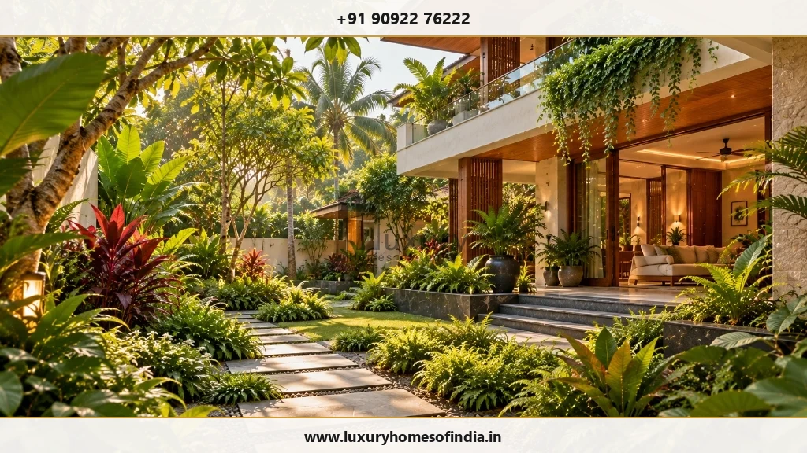

Luxury Home Landscape Design in Chennai
Outdoor spaces that belong to your home—and your life.
Key Takeaways: Villa Landscape Planning
- Indoor-Outdoor Continuity: Residential landscapes must be planned simultaneously with floor plans to extend indoor living rooms into shaded verandahs, private garden dining, and courtyards.
- Chennai Tropical Microclimate: Plant selections must thrive in coastal heat, humidity, and monsoon rainfall. High solar exposure areas benefit from broad-canopy shade trees and timber pergolas.
- Monsoon Stormwater Engineering: Heavy Chennai rains require sloped stone paving, sub-surface French drains, perforated trench channels, and rain gardens to prevent water pooling near building foundations.
- Specialist Landscape Features: Vertical green walls, designer timber/aluminum pergolas, stepping stone walking trails, and curated tropical planting zones require integrated irrigation and waterproofing.
- Coastal Salt Air Tolerance: ECR and OMR coastal properties demand salt-spray resistant plant species (such as Frangipani, Areca Palm, and Temple Tree) and marine-grade stainless steel hardware.
A well-planned landscape should do far more than look attractive through a glass window. It shapes the arrival experience to your residence, creates private outdoor living rooms, frames peaceful garden vistas, provides natural shade from tropical sun, and establishes a seamless flow between interior and exterior spaces.
Luxury home landscape design in Chennai is the holistic synthesis of gardens, outdoor seating, curated planting, circulation paths, privacy screening, and supporting irrigation/drainage systems so they function as an extension of the home's architecture. At Luxury Homes of India, landscape architecture is listed among our bespoke residential solutions, including vertical gardens, designer pergolas, walking trails, and curated planting schemes.
If you are planning a landscape for a new villa or upgrading an existing plot, begin with how you want your outdoor spaces to function—not simply which decorative features you wish to add.

Plan the grounds as part of the home
The entrance approach, private gardens, central courtyard spaces, and rooftop terraces shape how your entire property is experienced. They are far better considered alongside initial architectural floor plans rather than treated as leftover ground after construction finishes.
A comprehensive residential landscape brief explores:
- Welcoming Entrance & Arrival: Pedestrian walkways, car driveways, ambient bollard lighting, and entrance portal planting.
- Private Family Sanctuaries: Secluded garden lawns, outdoor dining decks, and quiet reading nooks.
- Interior Sightlines: Framing garden greenery from living rooms, dining spaces, and master suites.
- Circulation & Movement: Stepping stone pathways connecting main house, poolside, and garden pavilions.
- Character & Screening: Dense perimeter bamboo or louvered trellises for privacy from neighboring plots.
- Technical Systems: Integrated sub-surface drainage, automated drip irrigation, and outdoor electrical rough-ins.
- Maintenance Access: Ensuring lawn mowers, hose points, and pruning equipment have practical access.
Landscape spaces shaped around your routines
Entrance and Arrival
Coordinate driveway paving, pedestrian stepping stones, low-voltage accent lighting, and entrance planting to complement your villa's exterior facade while keeping car parking, turning radii, and gate entry practical.
Private Gardens
Design garden areas around how your family intends to relax. Balance soft lawn turf with paved patio areas, ensuring sightlines from interior living spaces bring calming greenery into the home.
Courtyards
An internal courtyard acts as an intimate green focal point between living zones. Planting selection, daylight capture, rainwater drainage, and surrounding sliding glass doors must be engineered as an integrated system.
Outdoor Seating & Dining
Position outdoor dining tables and lounge sofas under deep roof verandahs or designer pergolas to shield occupants from direct tropical sun while enjoying garden views.
Paths and Garden Circulation
Garden paths should connect useful destinations intuitively. Select non-slip natural stone paving (such as flamed granite or slate) with gravel margins for clean drainage.

Planting with a clear purpose
Plant selection should respond directly to site microclimates. Beyond visual aesthetics, consider sun exposure, coastal wind speeds, soil salinity, water consumption, and mature root spread:
- Mature Scale & Spacing: Prevent overcrowded planting beds by allocating space for mature tree canopy expansion.
- Building & Service Clearance: Keep deep-root trees away from underground sewer lines, foundation footings, and boundary walls.
- Shade & Privacy Screening: Use tall Areca palms, Ficus jaalis, or bamboo hedges along plot boundaries for natural green privacy.
- Irrigation Efficiency: Group plants by water requirements (hydrozoning) to optimize automated drip irrigation schedules.
Key landscape elements to explore
Pergolas and Shaded Pavilions
A designer timber or powder-coated aluminum pergola extends outdoor usability. Enhance pergolas with integrated climbing vines (such as Bougainvillea or Passion Flower), motor-driven louvers, and indirect LED strip lighting.
Vertical Gardens (Green Walls)
Vertical gardens maximize greenery on compact plots or blank boundary walls. Ensure professional drip irrigation modules, specialized geotextile planting pockets, and waterproof backing membranes are installed to prevent wall dampness.
Garden Stepping Stone Paths
Winding slate or granite stepping stone trails set within gravel borders create charming walking paths while allowing rainwater to infiltrate naturally into the ground.
Layered Tropical Planting
Combine groundcover (Mondo grass, Wedelia), mid-tier shrubs (Heliconia, Hibiscus, Crotons), and tall palm canopies to create rich visual depth and tropical texture.

Designing for Chennai's coastal environment
Chennai’s climate presents distinct landscape design requirements:
- Sun & Thermal Comfort: Analyze seasonal solar angles. Place outdoor seating under north-facing shade or beneath dense tree canopies to maintain comfortable temperatures during hot afternoons.
- Monsoon Stormwater Management: Heavy northeast monsoons demand sloped ground levels, perforated drain channels, and rainwater harvesting recharge pits to prevent flooding near the home's plinth.
- Coastal Salt Air Resilience: For properties near ECR or Besant Nagar beaches, select salt-tolerant coastal species (such as Pandanus, Coconut Palm, Plumeria) and 316-grade stainless steel outdoor light fixtures.

Connect landscape, architecture and services
Landscape engineering requires early coordination across technical building trades:
| Landscape Element | Key Technical & Architectural Coordination |
|---|---|
| Hardscape Paving | Coordinate ground slopes (1:50 drop away from building), non-slip stone finishes, sub-base compaction, and threshold levels. |
| Planting Beds | Specify topsoil depth (minimum 450mm for shrubs), organic compost, root barrier membranes, and sub-surface drainage lines. |
| Trees & Palms | Verify root spread setbacks from structural column footings, underground water tanks, and electrical cables. |
| Outdoor Lighting | Run armored PVC conduits for low-voltage LED bollards, tree spotlights, and waterproof transformer junction boxes. |
| Automated Irrigation | Install dedicated water supply lines, solenoid control valves, rain sensor modules, and drip lines to root zones. |
| Designer Pergolas | Anchor steel/timber columns into reinforced concrete footings; integrate gutter rainwater spouts and electrical points. |
| Poolside Decks | Use anti-skid granite or composite teak decking over waterproofed sub-slabs with perimeter deck slot drains. |

A practical landscape planning framework
- Establish the Brief: Share plot survey drawings, orientation details, outdoor lifestyle priorities, and budget targets.
- Develop Spatial Layout: Map out circulation paths, seating zones, lawn areas, pergolas, and plant bed boundaries.
- Confirm Technical Specifications: Finalize hardscape stone samples, plant species lists, irrigation schedules, and lighting plans.
- Coordinate Civil Execution: Execute earthwork grading, sub-surface drainage piping, electrical conduit rough-ins, and pergola footings.
- Planting & Handover: Lay topsoil, plant specimen trees and shrubs, test automated irrigation, and establish maintenance handbooks.
Frequently Asked Questions
Make your outdoor spaces part of everyday living
Your landscape should respond to the way you arrive, relax, entertain, and move through your home. Discuss your site, priorities, and ideas with Luxury Homes of India.